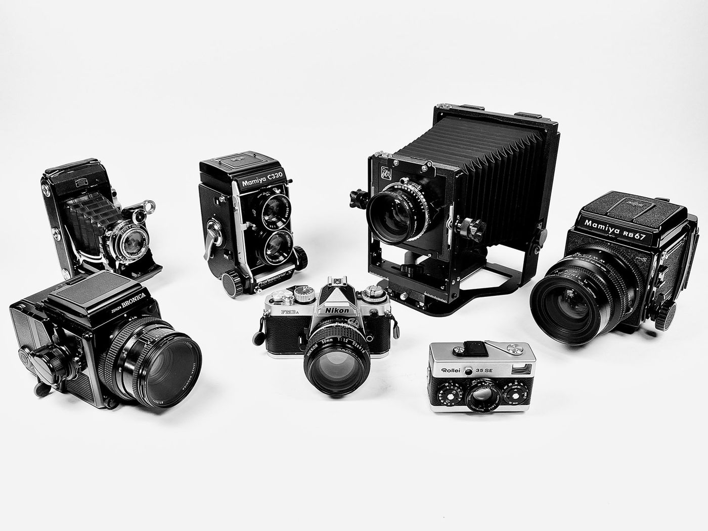
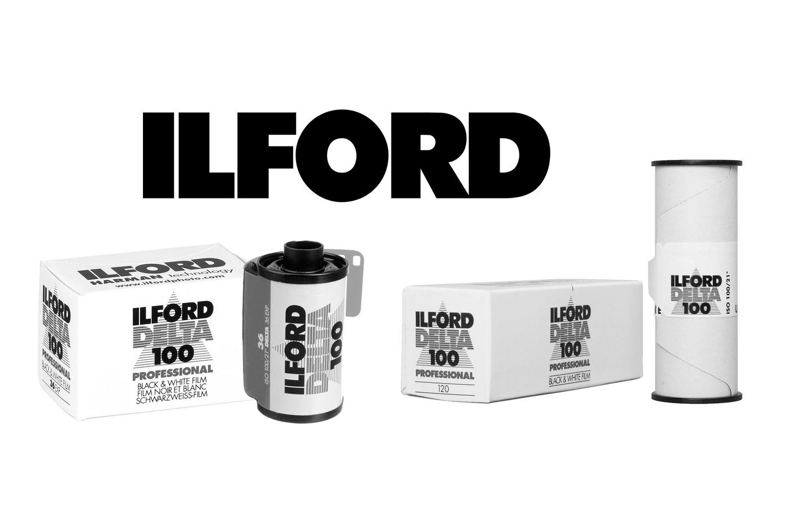
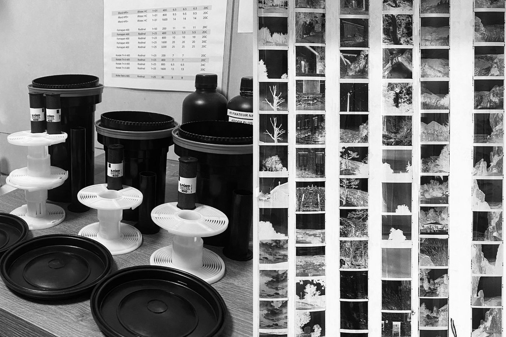
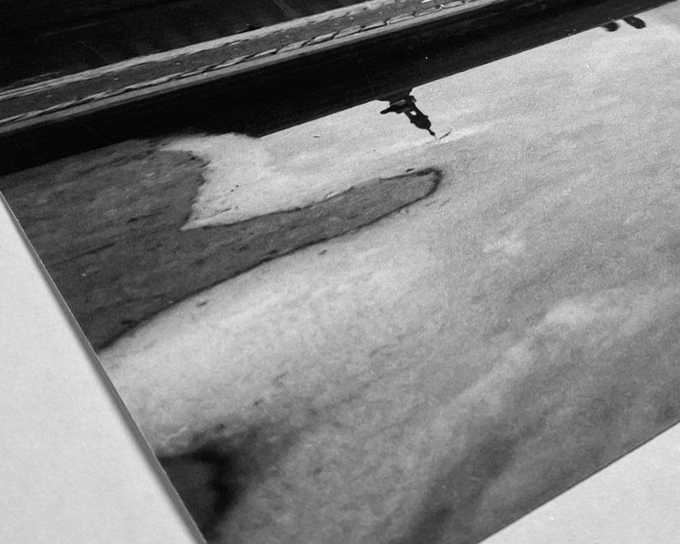
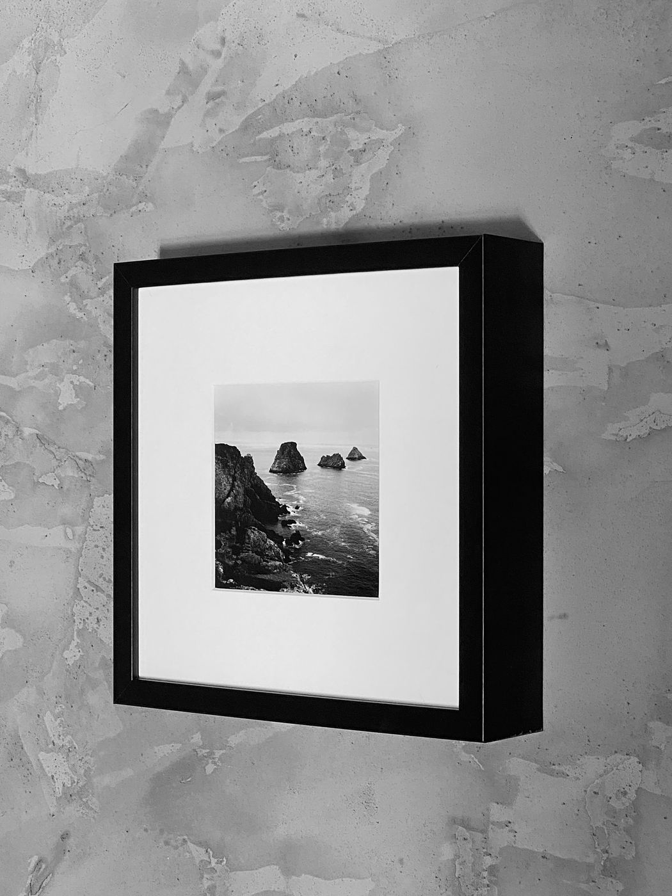
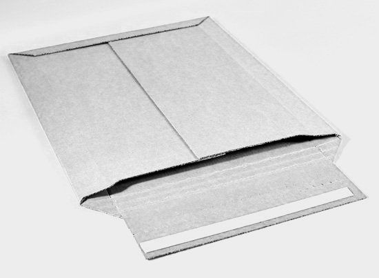

Ce que je vous propose …

Photographies argentiques
L’intégralité des photos que vous allez retrouver sur ce site ont été réalisées par moi-même en argentique et ne sont pas libres de droit mais disponibles en tirage d’Art.
Qu’il s’agisse de reflex 35mm, d’appareils moyen format ou de chambres photo, j’utilise exclusivement mes propres boîtiers acquis au fil des années.

Pellicules et films photo
A la recherche de rendus de qualité, j’ai eu l’occasion de tester de nombreuses pellicules et films photo de différentes marques.
J’ai décidé de faire confiance à ILFORD et sa gamme Delta qui correspond en tout point à ma vision de ce que je recherche pour mes noir et blanc : contraste, netteté et densité des rendus.

Développement
En argentique il ne s’agit pas de prendre sa photo et de vider sa carte mémoire sur son ordinateur. La démarche est toute autre, bien plus artisanale, délicate et précise.
Partie intégrante de mon processus photographique, je m’occupe personnellement du développement de mes pellicules rouleaux et planches dans mon propre labo.
Je les scanne ensuite sur mon banc de numérisation afin de conserver au mieux la magie de l’argentique sans dénaturer ce qui fait tout son charme.

Tirages d’Art
Je réalise les tirages jusqu’au 30x45cm moi-même dans mon atelier proche de Lyon sur une imprimante professionnelle jet d'encre pigmentaire.
J’ai fait le choix d’un beau papier professionnel Fine Art de chez ILFORD de la gamme Galerie Heavyweight Matt 310gr car il offre un rendu doux et mat avec une très belle profondeur dans les noirs.
Il correspond totalement à ma vision d’un noir et blanc dense qui joue sur les contrastes et l’intensité d’une composition.
Pour toute demande spécifique (autres papiers, grands tirages, ...) n’hésitez pas à me contacter si vous avez des questions ou si vous souhaitez un tirage personnalisé.

A vous de choisir
Vous aussi vous faites partie du processus en choisissant un de mes tirages, c’est pour cela que j’ai fait le choix de vous donner le choix.
Les tirages d’Art sont proposés format papier sans cadre afin de vous laisser choisir votre support en adéquation avec votre intérieur et vos goûts, avec ou sans passe-partout.
Si vous souhaitez que je m’en occupe, cela reste toutefois possible, n’hésitez pas à me contacter pour que l’on échange afin de voir ensemble ce que vous recherchez.

Délais
Pas de multinationale ici mais de l’artisanat avec le souhait de bien faire les choses. Ainsi chaque tirage est réalisé à la demande, personnalisé et aucun stock n’est fait.
Après impression, il est vérifié, daté et signé avant expédition en lettre suivie en France et à l’international.
Les délais de traitement avant expédition sont d’une semaine environ.